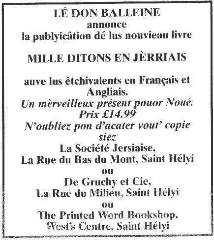

 Sanm'di lé 9 dé Dézembre 2000 s'sa un jour bein important pouor Lé Don Balleine, formé i' y'a eune chinquantaine d'années pouor contribuer envèrs la prêsérvation du Jèrriais.
Lé Don Balleine a organisé la publyicâtion dé plusieurs livres et chu sanm'di i' s'en vont lanchi eune importante oeuvre 'Mille Ditons en Jèrriais' (et lus êtchivalents en Français et Angliais).
Dans l'couothant dé bein d's années i' y'a un nombre dé gens tch'ont contribué â la compilâtion des 1,000 ditons ou proverbes dans la langue dé notre ile et lus êtchivalents dans les deux autres langues. Parmi ches'-chîn sont lé Docteu Frank Le Maistre, lé défunt Docteu Albert Carré, lé défunt Moussieu Philip de Veulle, Moussieu Pierre Le Moine, I' Avocat Général la D'mouaîselle Stéphanie Nicolle, l'Juge Max Lucas, Moussieu Laurie Huëlin et Moussieu Brian Vibert. La puspart des ditons fûtent atchumulés des publyicâtions des Bulletins dé l'Assembliée d'Jèrriais et du Dictionnaire Jersiais-Français, le chef d'oeuvre du Docteu Frank Le Maistre. D'autres nos vîntent à l'esprit et i' y'en acouo d'autres tchi nos fûtent mentionnés par des anciens tchi les avaient apprîns sus les genouors dé lus mémèe quand l'Jèrriais 'tait pâlé partout,
Nou-s-a pâssé des heuthes d'èrchèrche et d'travas pouor s'asseûther qué l'expression du diton Jèrriais s'sait commeunitchie aussi exactément qué possibl'ye dans la vèrsion française et angliaîche.
En tchiques cas i' n'y avait pas d'êtchivalent en Angliais mais les trais rédacteurs ont prins la libèrté d'inventer des provèrbes tchi n'es'sont pas trouvés dans autcheune autre publyicâtion ailleurs!
I' y'a un abondant index des mots-cliés tchi, dé sé-même, est interêssant à liéthe, notant les sujets les pus populaithes - l'amour, Dgieu, les cats, les couochons, lé Dgiâbl'ye, les femmes, les hommes, lé ma, la mé, les sou, les tchians, lé temps, la tèrre, les vaques . . .
Les ditons tchi traitent lé même sujet ont, pour la puspart, 'té mîns ensembl'ye et ou'est qu' les rédacteurs ont trouvé des ditons en Jèrriais tchi s'entré-r'sembl'yaient il' ont r'cordé lé miyeu connu.
L'avant-propos du livre a 'té ce rit par Messire Philip Bailhache, Bailli d'Jèrri, et Lé Don Balleine est diversément privilégie qué l'Bailli s'en va lanchi ch't oeuvre dans la présence des invités distîndgis.
Lé livre s'sa à vendre au publyi au prix dé £14.99 dé lundi lé 11 de Dézembre et s'sa un mangnifique présent dé Noué pouor tous tchi chiéthissent chutte partie dé not' héthitage Jèrriais.
JEP 7/12/2000